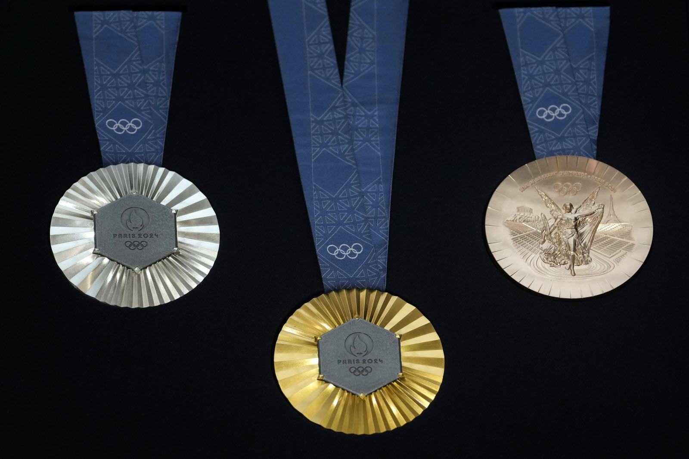
Au total, lors de ces jeux olympiques de Paris 2024, les escrimeurs français rapportent à la France un total de 7 podiums dans les différentes catégories. 1 médaille d'or, 4 d'argent et 2 de bronze. Comparé à 2020, on a obtenu 2 podiums de plus, cependant, il y a 4 ans, on avait remporté 2 médailles d'or. Aux jeux olympiques de 2016, on avait remporté 2 médaille, une d'or et une de bronze. On observe donc une claire évolution au cours du temps des médailles obtenues.
Mais, l'escrime reste tout de même le sport ayant remporté le plus de médailles de jeux olympiques à la France, avec 130 médailles, dont 45 en or.
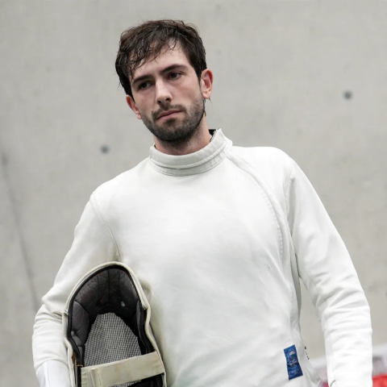
ALLEGRE Paul :
Paul Allègre vient au monde le 2 juin 1996 à Nevers et découvre l'escrime à 6 ans après avoir vu une publicité à ce sujet. Cette découverte changea le cours de sa vie à jamais. Aujourd'hui épéiste du Levallois Sporting Club, Paul Allègre s'est affirmé à plusieurs reprises sur la scène internationale en remportant les Championnats d'Europe U23 de 2019 individuel et par équipes, et en obtenant une médaille d'or lors du Championnat d'Europe de 2024. Il fut également champion de France Junior en 2016 et champion de France 2023 en combat individuel. Ce palmarès lui a valu une qualification pour les Jeux Olympiques de 2024 en tant que remplaçant.
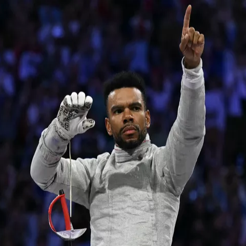
APITHY Boladé :
Boladé Apithy est un escrimeur né le 21 août 1985 à Dijon et qui pratique le sabre. Appartenant au club CE Orléans, cet athlète a de quoi représenter fièrement son pays, avec 6 médailles d'or remportées lors des Championnats de France. Il a également remporté le Championnat d'Europe de 2023 à Cracovie et a même obtenu une médaille de bronze par équipes lors des Jeux Olympiques de Paris 2024 tout en ayant obtenu le titre de Chevalier de l'Ordre National du Mérite.
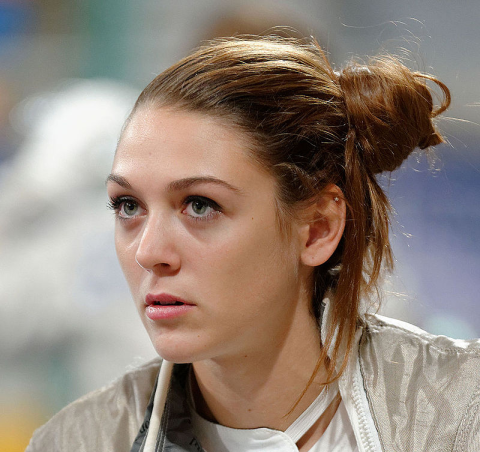
APITHY-BRUNET Manon :
Tout comme son époux Boladé Apithy, Manon Apithy-Brunet est une sabreuse de haut niveau. Dès sa naissance le 7 février 1996 à Lyon, elle a été décrite comme très sportive par sa famille. Elle a commencé sa carrière sportive à 8 ans dans le club Sabre au Clair mais a très vite été repérée par le CE Orléans du fait de ses nombreuses victoires. Après cela, elle n'a cessé de s'améliorer, remportant divers championnats européens ainsi que le Championnat Mondial de 2018 par équipes. Manon Apithy-Brunet fut par la suite sélectionnée pour les Jeux olympiques de Paris 2024 où elle parviendra à obtenir une médaille d'or en combat individuel.
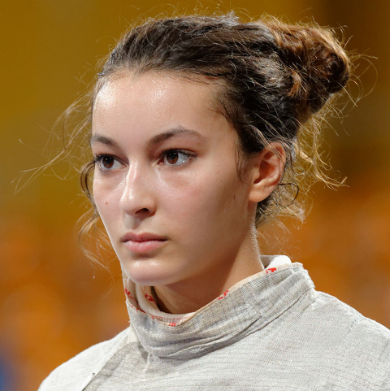
BALZER Sara :
Sara Balzer est née le 3 avril 1995 à Strasbourg et pratique le sabre depuis ses 8 ans dans le club Strasbourg UC. C'est ainsi qu'elle devint championne de France de sabre en 2009 dans la catégorie des moins de 17 ans. Puis elle devint championne d'Europe par équipes en 2022 et 2023 avant de gagner une médaille d'argent en individuel lors des Jeux Olympiques de Paris 2024.
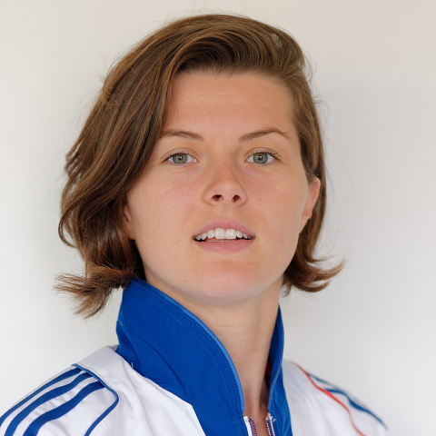
BERDER Cécilia :
On raconte que Cécilia Berder était censée faire de l'escalade à ses 7 ans mais que sa mère lui aurait dit « Tu as le look d'une escrimeuse, ma fille », changeant son parcours sportif à jamais. Née le 13 décembre 1989 à Morlaix, Cécilia Berder pratique le sabre dans le club CE Orléans. Elle est devenue championne Mondiale en 2018 par équipes avant de remporter deux autres médailles d'or lors des Championnats Européens de 2022 et 2024. Elle est également douée en combat individuel puisqu'elle remporta le Championnat de France de 2023.
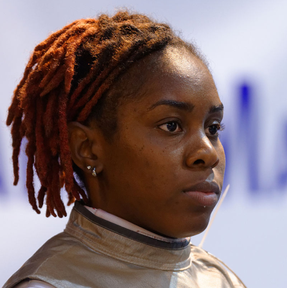
BLAZE Anita :
Férue de fleuret, Anita Blaze est née le 29 octobre 1991 aux Abymes en Guadeloupe et évolue au club Aubervilliers Escrime Club. Après avoir débuté l’escrime à 7 ans, elle décroche une médaille d’argent par équipes aux Jeux Olympiques 2021. En 2023, elle a réitéré cet acte au Championnat d’Europe. De ce fait, elle a été intégrée dans l'équipe olympique de 2024 en tant que remplaçante.e
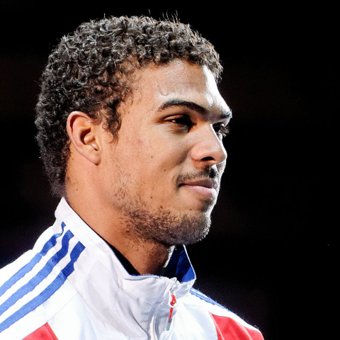
BOREL Yannick :
Né en Guadeloupe (Pointe-à-Pitre) le 5 novembre 1988, Yannick Borel est un épéiste au palmarès impressionnant. En plus d'avoir été champion olympique en 2016, il a remporté deux championnats français et européens ainsi que 4 championnats mondiaux en combat par équipes. Il se débrouille tout aussi bien en combat individuel en remportant les Championnats Français et Mondiaux de 2018 et en obtenant 4 victoires (dont 3 consécutives) lors des Championnats Européens de 2016, 2017, 2018 et 2022. Lors des Jeux Olympiques de Paris 2024, Yannick Borel est parvenu à arriver en seconde place en combat individuel. Il est membre du Levallois Sporting Club et Chevalier de la Légion d'Honneur. La Médaille de la jeunesse, des sports et de l'engagement associatif, catégorie or, lui a également été décernée en 2024.
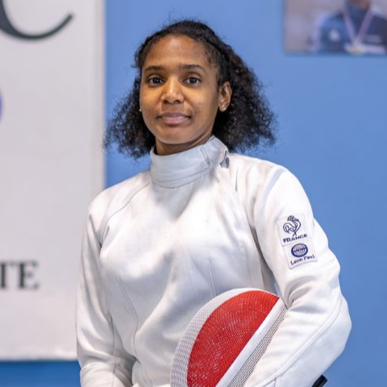
CANDASSAMY Marie-Florence :
Marie-Florence Candassamy, née le 26 février 1991 à Paris, est une escrimeuse française spécialisée dans l’épée et licenciée au Paris Université Club. Elle commence l’escrime à l’âge de 7 ans au sein du PUC, où elle est rapidement surclassée en raison de ses performances prometteuses. Au fil des années, elle s’impose comme une athlète de haut niveau, devenant championne du monde individuel en 2023. Elle remporte également les titres de championne d’Europe par équipes en 2022 et 2023 et obtient une médaille d’argent par équipes aux Jeux olympiques de 2024.
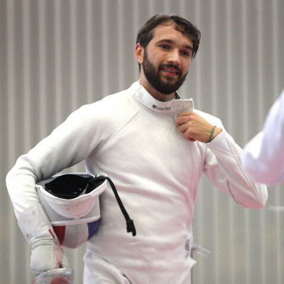
CANNONE Romain :
Romain Cannone est un escrimeur né le 12 avril 1997 à Boulogne-Billancourt et pratiquant l'épée au club VGA Saint-Maur. C'est à partir de 2021 qu'il s'impose en tant qu'épéiste de haut niveau en devenant Champion Olympique de 2021 dans la catégorie combat individuel. Un an plus tard, il remporte deux médailles d'or lors du Championnat Mondial qui se déroulait la même année. Romain Capone est à la fois Chevalier de la Légion d'Honneur et titulaire de la La Médaille de la jeunesse, des sports et de l'engagement associatif catégorie or.
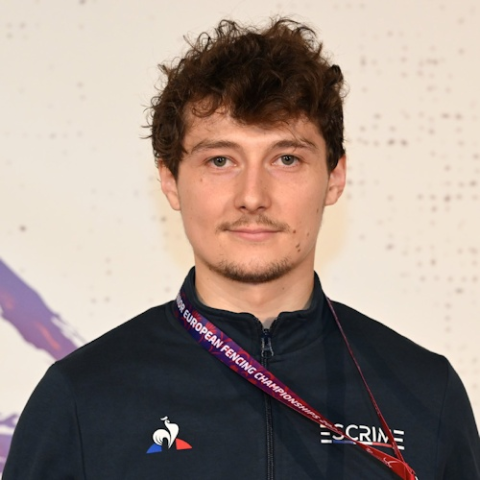
CHASTANET Maximilien :
Maximilien Chastanet, né au Havre le 15 mars 1996, est un fleurettiste du club Issy les Moulineaux ainsi qu'un remplaçant lors des Jeux Olympiques de 2024. Il a débuté sa carrière avec des succès notables, notamment en 2015 où il a été double champion des Jeux Mondiaux Universitaires, en individuel et par équipes. En 2024, il a remporté un titre de champion d’Europe et a même obtenu une médaille de bronze aux Jeux Olympiques de 2024. Ses accomplissements lui ont valu la distinction de Chevalier de l’Ordre National du Mérite en 2024.
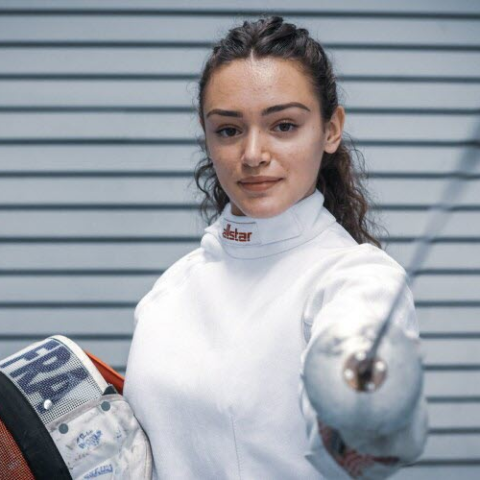
LACHERAY Eva :
Eva Lacheray, née le 11 mars 2000 à Montbéliard, pratique le fleuret et représente son club local. Elle a commencé l’escrime à l’âge de 9 ans et a rapidement fait son entrée sur la scène internationale. En 2022 et 2023, elle a remporté les titres de championne d’Europe U23, aussi bien en individuel qu’en équipes, marquant une belle progression dans sa carrière.
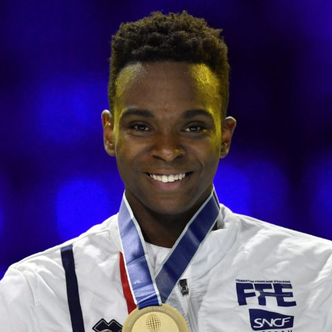
LEFORT Enzo :
Avec son palmarès époustouflant, Enzo Lefort n'a pas volé son titre de Chevalier de la Légion d'honneur ni celui de Chevalier de l'ordre national du Mérite. En effet, ce fleurettiste du CE Melun Val de Seine a été grand vainqueur des Jeux Olympiques de 2021 par équipes ainsi que champion du Monde en 2014 et en tout 5 fois champion d'Europe. Il se débrouille également très bien en combat individuel, ayant remporté le Championnat du Monde en 2019 et 2022. De plus, Enzo Lefort a remporté une médaille de bronze lors des Jeux Olympiques de Paris 2024. Cette compétence hors du commun s'explique par son apprentissage de l'escrime 5 ans après sa mise au monde le 29 septembre 1991 à Cayenne (Guyane).
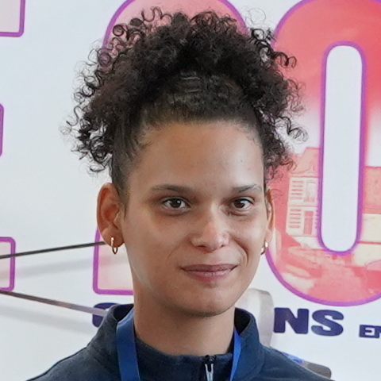
LOUIS-MARIE Alexandra :
Alexandra Louis-Marie, née le 3 mars 1996 à Fort-de-France, est une épéiste membre du Levallois Sporting Club. Elle a débuté l’escrime à l’âge de 6 ans aux Mousquetaires de Ducos. En 2019, elle a remportéune médaille d’or individuelle aux Universiades d’été et un titre de championne du monde universitaire en individuel. Elle a également connu un grand succès en 2023 en étant déclarée championne d'Europe, tant en individuel qu’en équipe. De ce fait, elle a été désignée comme remplaçante lors des Jeux Olympiques de 2024. Et tout comme ses coéquipières, elle a remporté une médaille d'argent en combat par équipes.
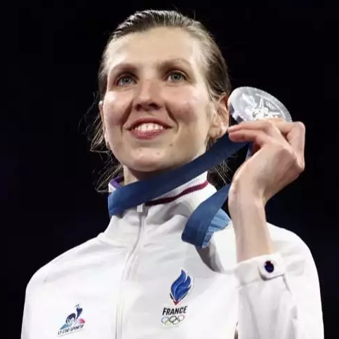
MALLO-BRETON Aurianne :
Auriane Mallo-Breton, née le 11 octobre 1993 à Lyon et formée dès l’âge de 7 ans au Masque de Fer est une épéiste représentant le club de Saint-Gratien. Son parcours remarquable inclut deux médailles d’argent aux Jeux Olympiques de 2024, en individuel et par équipes. Elle s’est également illustrée en devenant championne de France en 2023 et double championne d’Europe par équipes en 2022 et 2023.
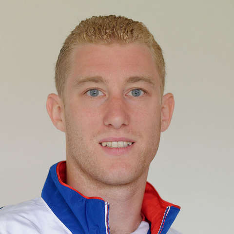
MERTINE Julien :
Julien Mertine, né le 25 juin 1988 à Saint-Germain-en-Laye, est un escrimeur de fleuret évoluant au CE Rueil-Malmaison. Il débute l’escrime à 5 ans et devient Maître d’Armes à 19 ans. Son palmarès inclut un titre de champion du Grand-Prix de Anaheim en 2019, ainsi que celui de champion de Bonn la même année. Il a également remporté le championnat de France en 2014 et a décroché le nombre vertigineux de 5 titres européens par équipes. Mertine a été champion du monde en 2014 et a obtenu l’or olympique par équipes en 2020. En 2021, il a été distingué en tant que Chevalier de la Légion d’Honneur.
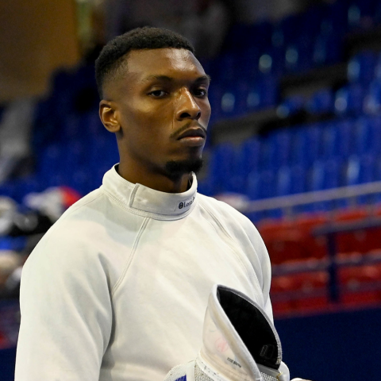
MIDELTON Luidgi :
Luidgi Midelton, né le 20 octobre 1998 aux Abymes en Guadeloupe, est un escrimeur spécialisé à l’épée. Licencié au CE Beauvais, il a commencé l’escrime à l’âge de 7 ans. En 2024, il a brillé sur la scène européenne en devenant champion d’Europe en individuel et par équipes.
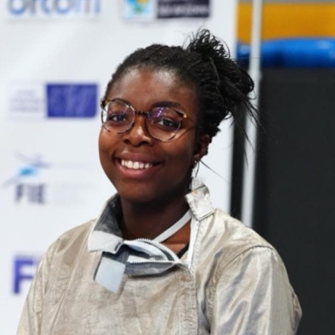
NOUTCHA Sarah :
Sarah Noutcha est une sabreuse du club SUC Escrime qui a été désignée comme remplaçante lors des Jeux Olympiques de 2024. Née le 16 décembre 1999 à Strasbourg, elle commence sa carrière sportive très tôt, à l'âge de 5 ans. Cette pratique de l'escrime sur le long terme lui a permis d'obtenir des médailles d'or lors des Championnats Européens de 2022 et 2024 par équipes ainsi que pendant les Jeux Mondiaux Universitaires de 2023 dans la même catégorie.
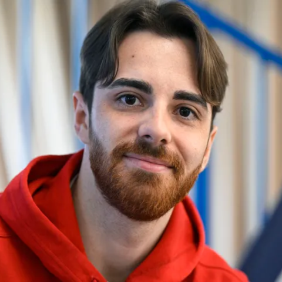
PATRICE Jean-Philippe :
En tant que grand frère de Sébastien Patrice, Jean-Philippe Patrice n'a rien à envier de ses compétences sportives. Né le 12 mars 1997 à Marseille, ce sabreur fait partie du CE Orléans et a remporté les Championnats Français de 2022, 2023 et 2024 par équipes. Il a participé aux Jeux Olympiques de 2024 en tant que remplaçant et a obtenu la médaille de bronze par équipes ainsi que le titre de Chevalier de l'Ordre National du Mérite.
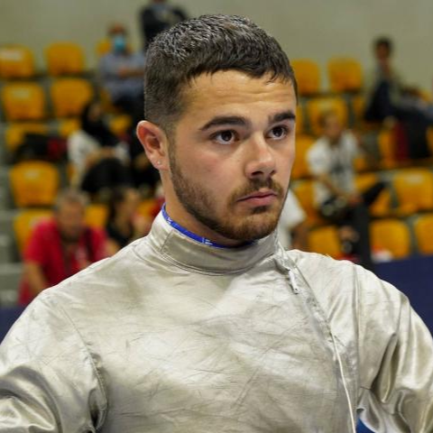
PATRICE Sébastien :
Né le 7 avril 2000 à Marseille, Sébastien Patrice est un sabreur ayant découvert l'escrime à 12 ans grâce à son frère. Avant de devenir membre du CE Orléans, il était au club d'escrime de Gémenos et a remporté une médaille d'argent lors du Championnat du Monde Junior de 2018. Depuis, il est devenu Chevalier de l'Ordre National du Mérite et a remporté de nombreux championnats français et européens par équipes, en plus de gagner une médaille de bronze dans la même discipline lors des Jeux Olympiques de 2024
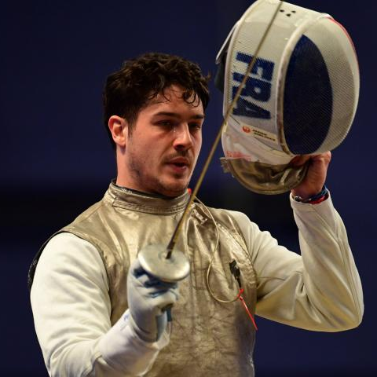
PAUTY Maxime :
Né à Clamart le 20 juin 1993, Maxime Pauty est un fleurettiste du club Issy les Moulineaux, où il a débuté l’escrime à l’âge de 5 ans. Son palmarès est marqué par des performances exceptionnelles, notamment un titre de champion olympique par équipes en 2021. Il a également remporté deux championnats d’Europe par équipes (2019 et 2024) et ajouté une médaille de bronze aux Jeux olympiques de 2024. En 2021, sa carrière a été honorée par une distinction de Chevalier de la Légion d’Honneur.
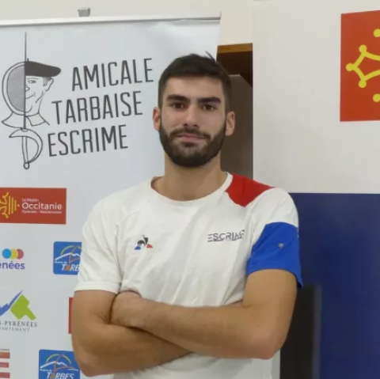
PIANFETTI Maxime :
Maxime Pianfetti est un sabreur né le 15 mars 1999 à Tarbes. Etant membre de l'Amicale Tarbaise d'Escrime ainsi que de la Police Nationale, il a débuté l'escrime à l'âge de 5 ans. Il a gagné des médailles d'or lors des Championnats Français de 2022 et 2023 en individuel ainsi qu'au Championnat d'Europe de 2023 par équipes. Tout comme ses coéquipiers Olympiques, Maxime Pianfetti a obtenu une médaille de bronze lors des Jeux Olympiques de 2024 et possède le titre de Chevalier de l'Ordre National du Mérite.
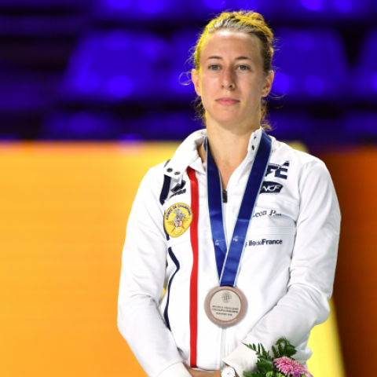
RANVIER Pauline :
Pauline Ranvier, fleurettiste née à Paris le 14 avril 1994, a débuté sa carrière au Cercle d’escrime de Suffren avant de rejoindre Melun en raison de son grand potentiel dans le milieu. En 2023, elle a remporté le titre de championne de France en individuel. Elle est également membre de l’équipe de France de fleuret féminin depuis 2015, une étape importante de son parcours d’escrimeuse prometteuse.
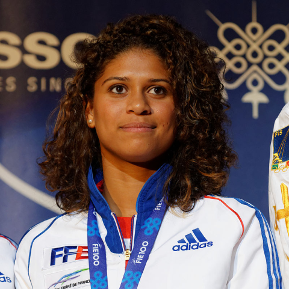
THIBUS Ysaora :
Fleurettiste née le 22 août 1991 aux Abymes en Guadeloupe, Ysaora Thibus évolue au sein du club BLR92. Elle a décroché le titre de championne du monde en 2022 en individuel, un exploit remarquable. En plus de son parcours sportif, elle poursuit des études à l’ESCP Europe et a été récompensée par le Prix Bernard Destremau de l’Académie des sciences morales et politiques pour ses réalisations sportives.
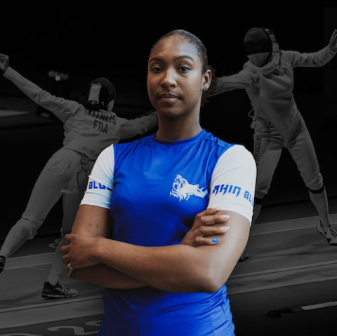
VITALIS Coraline :
Coraline Vitalis, née le 9 mai 1995 à Pointe-à-Pitre (Guadeloupe), pratique l’épée au Levallois Sporting Club, où elle a débuté à l’âge de 8 ans. Elle a été championne du monde junior en individuel en 2015, un titre marquant dans sa carrière. Elle a ensuite remporté le championnat d’Europe en 2019 en individuel, ainsi que cinq titres européens par équipes (2017, 2018, 2022, 2023). En 2024, elle a décroché une médaille d’argent par équipes aux Jeux Olympiques de 2024, confirmant sa régularité au plus haut niveau.